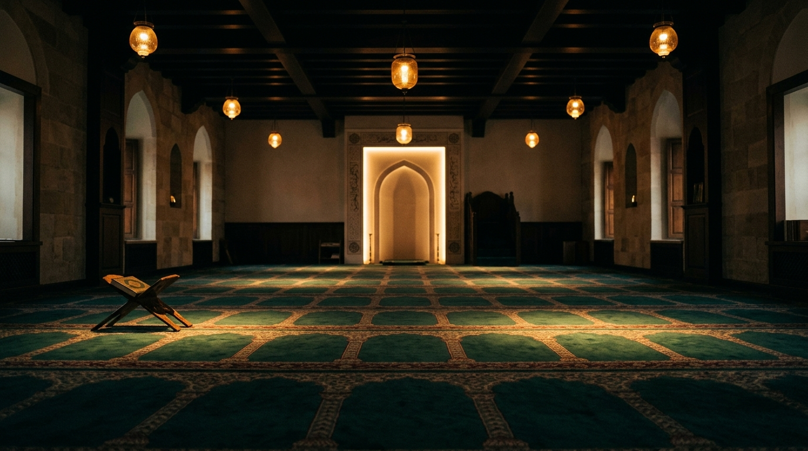

Oraciones diarias y Yumuah
Las cinco oraciones en congregación y la jutba semanal.
 Comunidad Islámica
de Torrejón de Ardoz
Comunidad Islámica
de Torrejón de Ardoz

بِسْمِ ٱللَّٰهِ ٱلرَّحْمَٰنِ ٱلرَّحِيمِ
Comunidad Islámica de Torrejón de Ardoz
--
Explora nuestra comunidad
Selecciona una de nuestras áreas principales para descubrir todo lo que la Comunidad Islámica de Torrejón de Ardoz tiene para ofrecerte.
يَا أَيُّهَا النَّاسُ إِنَّا خَلَقْنَاكُم مِّن ذَكَرٍ وَأُنثَىٰ وَجَعَلْنَاكُمْ شُعُوبًا وَقَبَائِلَ لِتَعَارَفُوا
«¡Oh, humanos! Os hemos creado de un varón y una hembra y os hemos hecho pueblos y tribus para que os conozcáis unos a otros».
Sura Al-Hujurat · 49:13
¿Tienes dudas sobre los horarios, quieres inscribirte en las clases o simplemente visitar la mezquita? Escríbenos.
Nuestra sede actual
مسجد النور
La Mezquita Annur es hoy el corazón de la Comunidad Islámica de Torrejón de Ardoz: nuestra mezquita activa y sede, donde rezamos, aprendemos y nos encontramos cada día mientras construimos la futura Mezquita Arriduan.
Las cinco oraciones diarias en congregación y la oración del viernes con su jutba. .
Acompañamiento y consejo para personas y familias, y encuentros periódicos de la comunidad.
La mezquita abre cada día para las oraciones. Visitas guiadas se organizan con cita previa.
Nuestros pilares
Las cinco oraciones en congregación y la jutba semanal.
Madrasat Iqraa: clases para niños y adultos de árabe y Corán.
Mentoría y programas deportivos para fortalecer lazos.
Orientación familiar y reparto de alimentos vecinal.
El gran proyecto estratégico de la Comunidad Islámica de Torrejón de Ardoz. Las obras siguen avanzando, pero tu aportación en esta fase es esencial.


«Recordamos con profunda gratitud y respeto a nuestro querido Sihmed (que Allah le tenga en Su misericordia). Su esfuerzo y entrega sincera fueron uno de los impulsos iniciales de este sueño que hoy seguimos construyendo entre todos. Os invitamos a ver el primer vídeo de la construcción de la mezquita.»

Colaboración Directa
Cada aportación es una sadaqa yariya que impulsa directamente las obras de la Mezquita Arriduan. Puedes colaborar de forma inmediata mediante cualquiera de nuestras vías oficiales:
Donación directa desde tu app bancaria
Transferencia bancaria directa
Concepto recomendado: «Construcción Arriduan» o tu nombre.
Aportación segura con saldo o tarjeta
Envía tu colaboración a través de la web o app de PayPal indicando este número de referencia.
Mezquita Annur · Torrejón de Ardoz
Puedes entregar tu donativo en mano o en las huchas oficiales habilitadas en la Mezquita Annur tras cualquiera de las 5 oraciones diarias.
Abierto todos los díasSi necesitas ayuda o prefieres consultar cualquier detalle, escríbenos directamente por WhatsApp.
«Quien construya una mezquita para Alá, Alá le construirá una casa en el Paraíso».
Sahih al-Bujari y Muslim
Educación y Cultura
مدرسة اقرأ
Una escuela para todas las edades y una comunidad viva donde compartimos, aprendemos y servimos juntos a lo largo de todo el año.
Lectoescritura y comunicación en árabe, desde el alfabeto hasta fluidez.
Fundamentos de fe, práctica religiosa y moral (ajlaq) del día a día.
Círculos de memorización y recitación con las reglas del tayuid.
Talleres, deporte y espacios de debate para jóvenes.
Iftares en Ramadán, celebraciones de Eid y reuniones familiares.
Jornadas de puertas abiertas y visitas escolares.
Recogida de alimentos y un equipo de voluntarios vecinal.
¿Quieres inscribirte en clases o sumarte a nuestro equipo de voluntarios? Escríbenos.

El té siempre corre de nuestra cuenta. Pásate, sin cita previa.
¿Te interesa el islam?
No hay preguntas tontas ni expectativas: solo puertas abiertas, conversaciones sinceras y una comunidad encantada de conocerte. Ven tal como eres, a tu ritmo.
Visitas guiadas para conocer cómo rezamos.
Charla tranquila con un miembro del equipo.
En absoluto. Todo el mundo es bienvenido. Muchos visitantes son vecinos curiosos.
Ropa discreta. Hay que descalzarse al entrar, y las mujeres pueden traer un pañuelo si lo desean.
Contacto
¿Tienes preguntas sobre oraciones, clases o el proyecto de construcción? Escríbenos.